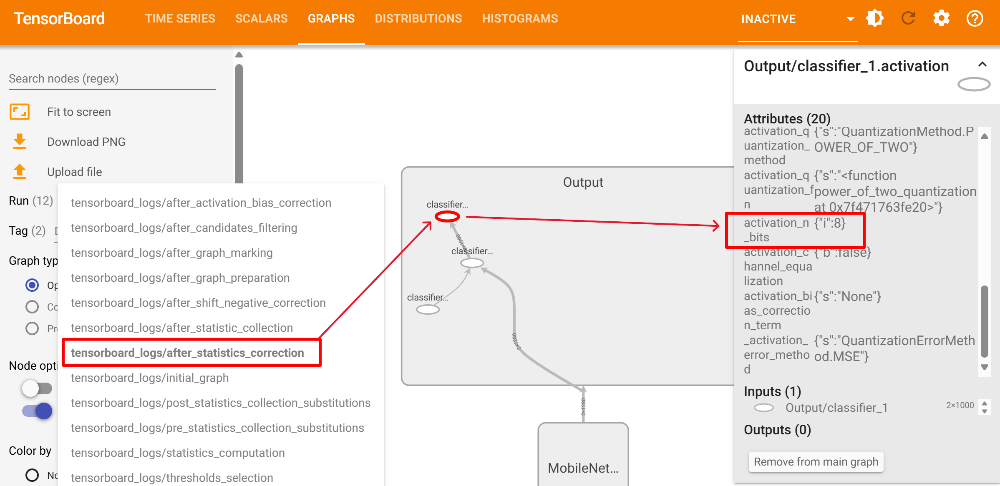

Mixed Precision with model output loss objective¶
In Mixed Precision quantization, MCT will assign a different bitwidth to each weight in the model, depending on the weight’s layer sensitivity and a resource constraint defined by the user, such as target model size.
Check out the Mixed Precision tutorial for more information.
Overview¶
In Mixed Precision optimization, the aim is to determine an optimal bitwidth assignment for each quantized layer to maximize the accuracy of the resulting model.
Traditionally, the Mixed Precision search relies on optimizing a loss function to achieve a high correlation with the actual model loss.
However, in scenarios involving high compression rates and complex models, the default objective may prioritize reducing the precision of the last layer, potentially leading to compromised results.
Trouble Situation¶
The quantization accuracy may degrade when the activation quantization bitwidth of the last layer is an extremely small number (e.g. 2 bits).
- For example, you can check the activation quantization bitwidth of the last layer by TensorBoard visualizations (after_statistics_correction in the below image).
- 
{kind=link}
Solution¶
MCT offers an API to adjust the Mixed Precision objective method (MpDistanceWeighting).
Set the distance_weighting_method attribute to MpDistanceWeighting.LAST_LAYER in the MixedPrecisionQuantizationConfig of the CoreConfig.
By emphasizing a loss function that places greater importance on enhancing the model’s quantized output, users can mitigate the risk of detrimental precision reductions in the last layer.
from model_compression_toolkit.core.common.mixed_precision import MpDistanceWeighting
mixed_precision_config = mct.core.MixedPrecisionQuantizationConfig(distance_weighting_method=MpDistanceWeighting.LAST_LAYER)
core_config = mct.core.CoreConfig(mixed_precision_config=mixed_precision_config)
quantized_model, _ = mct.ptq.pytorch_post_training_quantization(...,
core_config=core_config)